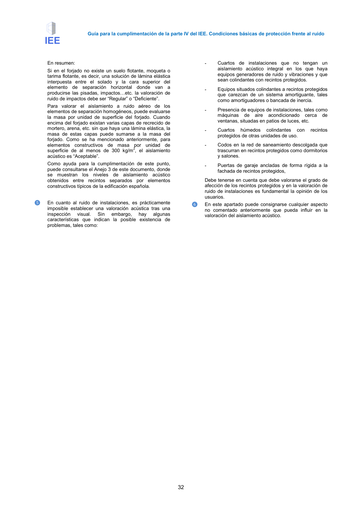

IEE 2016 · edición 2016-11-01 · capa guia
Documento GUIA-PDF-a5d4ef5252ba · SHA-256 del PDF 813669d3066c0ff79457d57b80b0512a4fbb248bc5db1f7baf473c369a064738
Página física 32 de 65.
Copia fiel del PDF fuente · Fuente oficial
Ficha de la disposición en la fuente oficial
Créditos y autoría en el PDF fuente. Reproducción con cita de fuente y autores.
Permiso literal: Se permite la reproducción del contenido total o parcial de esta Guía siempre y cuando se haga citando la fuente original.
Guía para la cumplimentación de la parte IV del IEE. Condiciones básicas de protección frente al ruido
Dirección y coordinación
Luis Vega Catalán
Mª Cristina Colomo Fernández
Eduardo González de Prado
Dirección General de Arquitectura, Vivienda y Suelo. Ministerio de Fomento
Mª Teresa Carrascal García
Instituto de Ciencias de la Construcción Eduardo Torroja. IETcc- CSIC
Autores
Mª Teresa Carrascal García
Amelia Romero Fernández
Mª Belén Casla Herguedas
Unidad de Calidad en la Construcción del Instituto de Ciencias de la Construcción Eduardo Torroja IETcc- CSIC
Se agradece la colaboración de
Belén Delgado Giménez
Fundación FIDAS
Alberto Esteban González
C.T.O. Estudios y proyectos – Gikesa
Giovanni Muzio
C.T.O. Estudios y proyectos
Francisco Labastida Azemar
Arquitecto, asesor CSCAE
Pedro F. Nogueira López
Universidad de A Coruña
Alejandro Sansegundo Sierra
Acústica SanSegundo
Esta Guía para la cumplimentación de la parte IV del IEE. Condiciones básicas de protección frente al ruido, nace en el marco del
convenio de colaboración llevado a cabo entre el Ministerio de Fomento y el Instituto de Ciencias de la Construcción Eduardo Torroja y
forma parte de la estrategia de este Ministerio de generar una serie de documentos de ayuda que faciliten la aplicación de la normativa
de la edificación y que en este caso concreto, ofrezca a los técnicos criterios para poder realizar una evaluación del estado inicial de las
edificaciones en lo referente a las condiciones acústicas de las viviendas existentes y plantear medidas que incrementen su confort
acústico.
En la redacción de este documento se ha utilizado algunos de los contenidos y de las figuras de la Guía de aplicación del DB HR
Protección frente al ruido. Dicha guía puede consultarse en:
http://www.codigotecnico.org/index.php/menu-documentos-complementarios/menu-guia-aplicacion-db-hr
Se permite la reproducción del contenido total o parcial de esta Guía siempre y cuando se haga citando la fuente original.
2Formato: Texto de la página (Markdown)
Guía para la cumplimentación de la parte IV del IEE. Condiciones básicas de protección frente al ruido 32 En resumen: Si en el forjado no existe un suelo flotante, moqueta o tarima flotante, es decir, una solución de lámina elástica interpuesta entre el solado y la cara superior del elemento de separación horizontal donde van a producirse las pisadas, impactos=etc. la valoración de ruido de impactos debe ser “Regular” o “Deficiente”. Para valorar el aislamiento a ruido aéreo de los elementos de separación homogéneos, puede evaluarse la masa por unidad de superficie del forjado. Cuando encima del forjado existan varias capas de recrecido de mortero, arena, etc. sin que haya una lámina elástica, la masa de estas capas puede sumarse a la masa del forjado. Como se ha mencionado anteriormente, para elementos constructivos de masa por unidad de superficie de al menos de 300 kg/m2, el aislamiento acústico es “Aceptable”. Como ayuda para la cumplimentación de este punto, puede consultarse el Anejo 3 de este documento, donde se muestran los niveles de aislamiento acústico obtenidos entre recintos separados por elementos constructivos típicos de la edificación española. ❺ En cuanto al ruido de instalaciones, es prácticamente imposible establecer una valoración acústica tras una inspección visual. Sin embargo, hay algunas características que indican la posible existencia de problemas, tales como: - Cuartos de instalaciones que no tengan un aislamiento acústico integral en los que haya equipos generadores de ruido y vibraciones y que sean colindantes con recintos protegidos. - Equipos situados colindantes a recintos protegidos que carezcan de un sistema amortiguante, tales como amortiguadores o bancada de inercia. - Presencia de equipos de instalaciones, tales como máquinas de aire acondicionado cerca de ventanas, situadas en patios de luces, etc. - Cuartos húmedos colindantes con recintos protegidos de otras unidades de uso. - Codos en la red de saneamiento descolgada que trascurran en recintos protegidos como dormitorios y salones. - Puertas de garaje ancladas de forma rígida a la fachada de recintos protegidos, Debe tenerse en cuenta que debe valorarse el grado de afección de los recintos protegidos y en la valoración de ruido de instalaciones es fundamental la opinión de los usuarios. ❻ En este apartado puede consignarse cualquier aspecto no comentado anteriormente que pueda influir en la valoración del aislamiento acústico.
